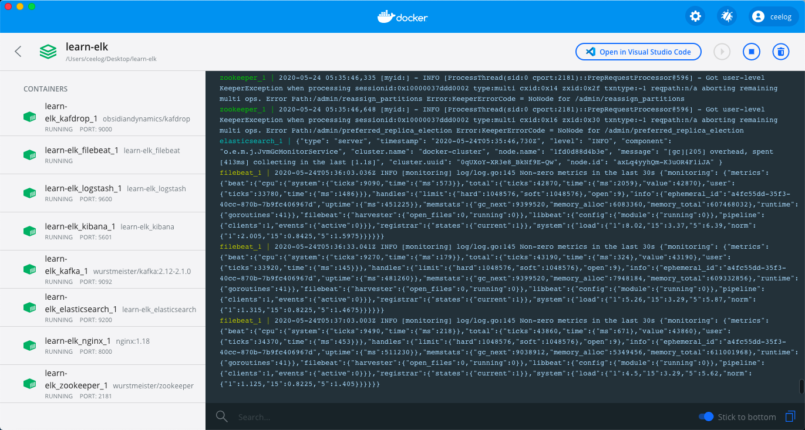
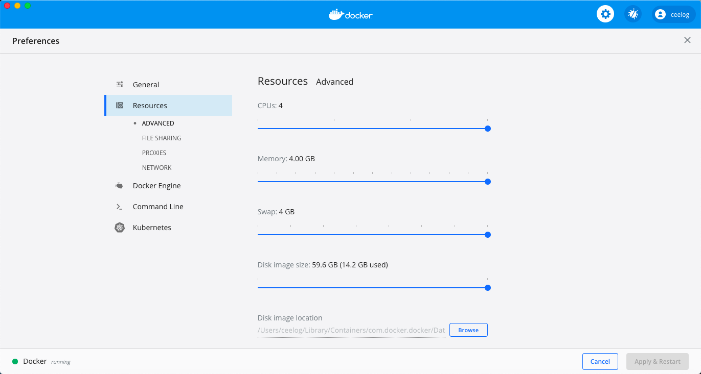
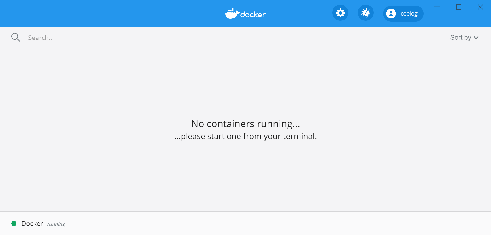
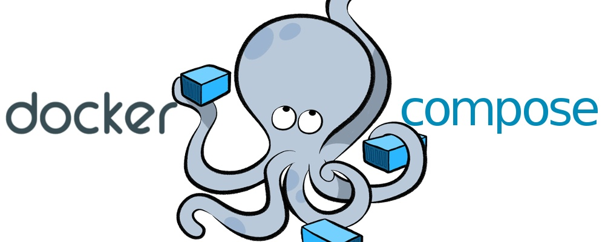
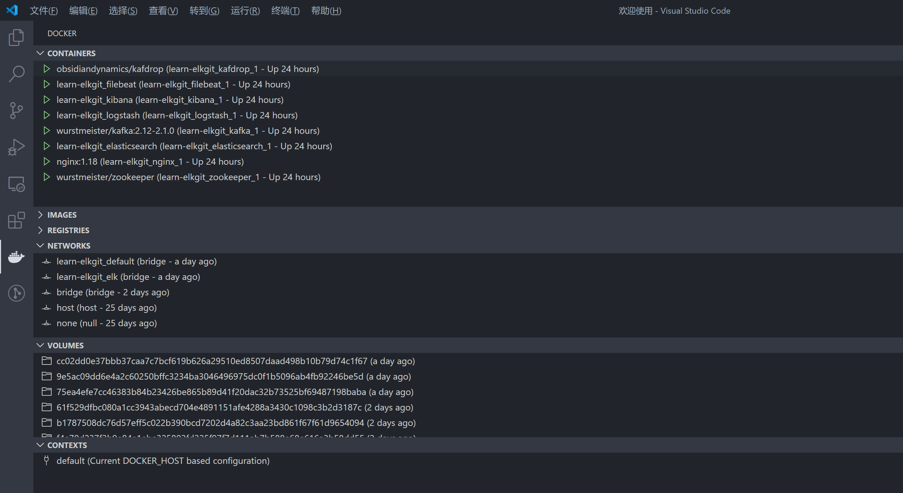

演示环境安装与配置
本地开发环境
为了深入理解各个组件的使用，建议读者在本地搭建一个开发环境。
为了解决系统环境和依赖的问题，本小册使用 Docker 容器运行各个组件，并使用 Docker Compose 进行服务编排，实现可「一键启动」的开发环境。
Docker 下载与安装
Docker 是一种容器化技术，可以将软件及其依赖的运行环境打包进一个容器中，和虚拟机不同的是，Docker 容器非常轻量，可以实现秒级的启动或关闭。
-
Docker 支持 Linux / Windows / MacOS 平台。
-
在官网下载与安装 Docker https://docs.docker.com/get-docker/
-
系统配置要求：
- 4GB 以上内存
- 2 核以上 CPU
Docker Desktop for Windows/Mac
为了支持 Windows 和 Mac 操作系统，Docker 开发了 Docker Desktop for Windows/Mac
以下是 Docker Desktop 运行起来的界面：

可以通过设置页面，配置足够的计算资源：

Docker for Linux
由于 Docker 源于 Linux 虚拟化技术，所以对 Linux 操作系统支持的很好。
安装参见 https://docs.docker.com/engine/install/
启动 Docker
Docker Desktop for Windows/Mac 安装完成后，直接双击图标就可以启动：

Docker for Linux 安装完成后，需要先启动 Docker 服务：
service docker start
启动成功后，可以在命令行查看 Docker 相关信息：
# docker version
Client: Docker Engine - Community
Version: 19.03.7
API version: 1.40
Go version: go1.12.17
Git commit: 7141c199a2
Built: Wed Mar 4 01:24:10 2020
OS/Arch: linux/amd64
Experimental: false
Server: Docker Engine - Community
Engine:
Version: 19.03.7
API version: 1.40 (minimum version 1.12)
Go version: go1.12.17
Git commit: 7141c199a2
Built: Wed Mar 4 01:22:45 2020
OS/Arch: linux/amd64
Experimental: false
containerd:
Version: 1.2.13
GitCommit: 7ad184331fa3e55e52b890ea95e65ba581ae3429
runc:
Version: 1.0.0-rc10
GitCommit: dc9208a3303feef5b3839f4323d9beb36df0a9dd
docker-init:
Version: 0.18.0
如果没有启动成功，则会报错：
# docker ps
Cannot connect to the Docker daemon at unix:///var/run/docker.sock. Is the docker daemon running?
Docker Compose
有了 Docker 后我们可以轻松运行各种软件，但是对于一个大型系统，涉及很多服务，以及服务之间的依赖关系。
如果手动处理各个服务、网络配置等计算资源，效率低下且容易出错。
这个时候可以使用 Docker Compose 编排这些服务，实现大型系统的「一键启动」

Docker 配置
本小册演示环境的所有配置都已经开源并托管在 Github ，下载地址：
系统配置目录结构如下所示：
.
├── docker-compose.yml
├── elasticsearch
│ ├── config
│ │ └── elasticsearch.yml
│ └── Dockerfile
├── .env
├── filebeat
│ ├── Dockerfile
│ └── filebeat.yml
├── kibana
│ ├── config
│ │ └── kibana.yml
│ └── Dockerfile
├── logstash
│ ├── config
│ │ └── logstash.yml
│ ├── Dockerfile
│ └── pipeline
│ ├── logstash.conf
│ └── nginx.conf
└── nginx
├── html
│ └── index.html
└── nginx.conf
其中 .env 文件声明使用 7.6.2 版本的 Elastic Stack:
ELK_VERSION=7.6.2
如果你想测试其他版本的 Elastic Stack，只需修改ELK_VERSION参数即可。
一键启动
上述配置文件中，docker-compose.yml 声明了我们需要的服务以及如果构建这些服务。
Docker 安装并启动后，执行以下命令即可「一键启动」整个开发环境：
cd learn-elk.git/docker-compose/
docker-compose -f "docker-compose.yml" up -d --build
# 运行结果
Creating network "learn-elkgit_elk" with driver "bridge"
Creating network "learn-elkgit_default" with the default driver
Building elasticsearch
Step 1/2 : ARG ELK_VERSION
Step 2/2 : FROM docker.elastic.co/elasticsearch/elasticsearch:${ELK_VERSION}
---> f29a1ee41030
Successfully built f29a1ee41030
Successfully tagged learn-elkgit_elasticsearch:latest
Building logstash
Step 1/2 : ARG ELK_VERSION
Step 2/2 : FROM docker.elastic.co/logstash/logstash:${ELK_VERSION}
---> fa5b3b1e9757
Successfully built fa5b3b1e9757
Successfully tagged learn-elkgit_logstash:latest
Building kibana
Step 1/2 : ARG ELK_VERSION
Step 2/2 : FROM docker.elastic.co/kibana/kibana:${ELK_VERSION}
---> f70986bc5191
Successfully built f70986bc5191
Successfully tagged learn-elkgit_kibana:latest
Building filebeat
Step 1/2 : ARG ELK_VERSION
Step 2/2 : FROM docker.elastic.co/beats/filebeat:${ELK_VERSION}
---> 0272ee9a7757
Successfully built 0272ee9a7757
Successfully tagged learn-elkgit_filebeat:latest
Creating learn-elkgit_nginx_1 ... done
Creating learn-elkgit_zookeeper_1 ... done
Creating learn-elkgit_elasticsearch_1 ... done
Creating learn-elkgit_kafka_1 ... done
Creating learn-elkgit_kibana_1 ... done
Creating learn-elkgit_logstash_1 ... done
Creating learn-elkgit_filebeat_1 ... done
Creating learn-elkgit_kafdrop_1 ... done
Creating learn-elkgit_metricbeat_1 ... done
注意：首次启动的时候，需要下载镜像文件，可能需要数十分钟，请耐心等候一下
如果你使用 VSCode 编辑器 并且 安装了 Docker 插件，那么你可以看到运行中的容器状态：

小结
本小节介绍了在线演示环境使用、本地开发环境搭建，在这个过程中读者也对整个系统有了大概的认识。
接下来，我们深入每个模块，了解其配置和运行环境。
常见问题
- filebeat 启动报错：
Exiting: error loading config file:
config file ("filebeat.yml") can only be writable by the owner but the permissions are "-rw-rw-r--"
(to fix the permissions use: 'chmod go-w /usr/share/filebeat/filebeat.yml')
原因：如果在 Linux 系统下启动，需要保证 filebeat 配置文件的读写权限正确，否则 Filebaet 容器无法启动并报错
解决方法：修改 filebeat 配置文件权限 chmod 644 filebeat.yml